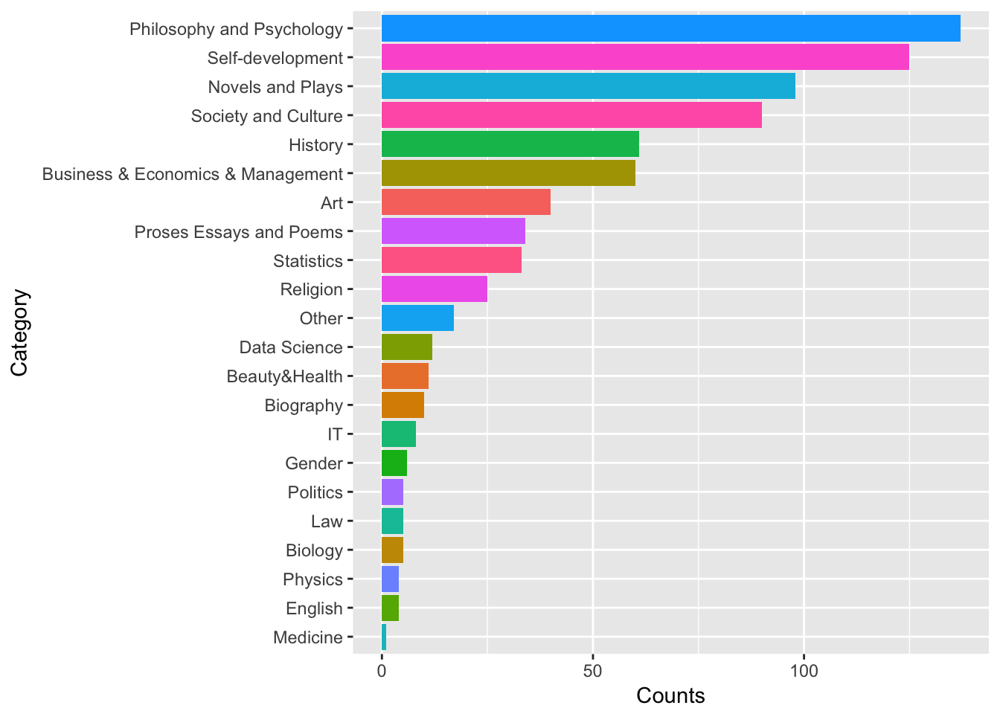
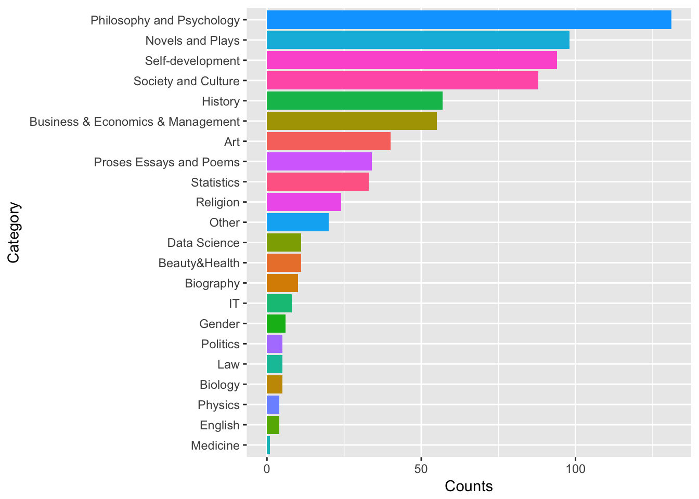

Reading Notes
Hui Lin
2017-10-15
Chapter 1 Introduction
Learning is happening increasingly outside of formal educational settings and in unsupervised environments. Technological advantages provide new tools and opportunities for life-time learners. This reading notes is my first step of managing my learning (aka: Personal Knowledge Management). This step is called Personal Information Management(PIM). The goals are:
- Organize information
- Initially process the information and understand the information structure
- Chunking: cluster similar information, filter out some detail, degrade the complexity
The reading notes are arranged according to book category in my reading list since 2009. For some reason I lost all reading information before 2009. There are tons of paper notes need to be digitized and I will keep working on it in my spare time. My personal comments will start with “Hui:” in blue. Sometimes I summarize the contents with my own words. It is great if you find any of those notes useful for you as well. I thank all my friends who recommended great books to me. I wrote this notes with R Markdown (Allaire et al. 2016) and the R package bookdown (Xie 2016a). To learn more about R Markdown, please check out the online documentation. For knitr, please see Xie (xie 2015). Here is a guide to authoring books with bookdown.
- Name: Book name
- Category: Book category
- ProDetail: My reading status
- HaveNotRead: have not started reading
- RoughReading: just got the structure and key ideas of the book without getting to every glorious detail
- PartialReading: read carefully for some parts of the book but not the whole
- ThroughReading: read word by word for the whole book
- IntensiveReading: read repeatedly and try to understand it very well
Topic: the subject of the book. I use the information to classify books to do “syntoptical reading” which is to read two or more books on the same subjects. You may find lots of missing values here as I just began my journey on this. Also, it is not easy to identify books with “same subject”. I will only assign subject to non-fictions.
Priority: priority of writing book summary
The categories are:
unique(dat$Category)## [1] History Other
## [3] Business & Economics & Management Society and Culture
## [5] Self-development Data Science
## [7] Philosophy and Psychology Biology
## [9] Proses Essays and Poems
## [11] Art Physics
## [13] Beauty&Health Biography
## [15] English Gender
## [17] IT Law
## [19] Medicine Novel
## [21] Novels and Plays Novels and Plays-detective
## [23] Politics Religion
## [25] Statistics
## 25 Levels: Art Beauty&Health Biography ... Statistics1.1 Rules of Generating book ID
It is tentative. I don’t think I will label my books. It was originally motivated by being able to find a book more easily. But it seems that I remember where to get a book when I need it.
- Category code + Number
- Number was origionally assigned as the rank of the book in its category devided by 100 (i.e rank/100)
- For new book
- search for the maximum number in that category (
mn) - use
mn+0.01as number for the new book
- search for the maximum number in that category (
1.2 Basic Statistical Analysis
Here is a plot for counts of books in each category……

Here is a plot showing the percentage of books I have started (or finished) across different categories.
